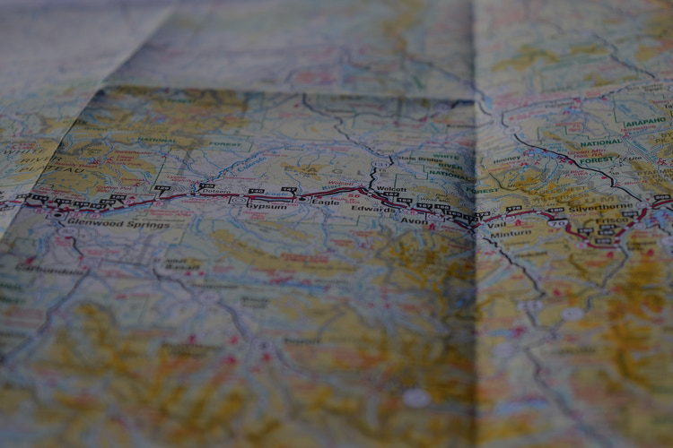

Свяжитесь с нами
Адрес: г.Москва, ул.Черкова, д.5 Телефон: 84945856956 E-mail:enjoy@mail.ru
Маршруты
Наверх
Маршруты

ЛЮБОЙ МАРШРУТ НА ВАШ ВКУС!
МАРШРУТ №1
МАРШРУТ №2
МАРШРУТ №3
МАРШРУТ №4
МАРШРУТ №5
МАРШРУТ №6
Смотреть все маршруты >>